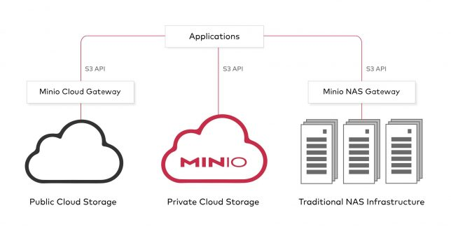
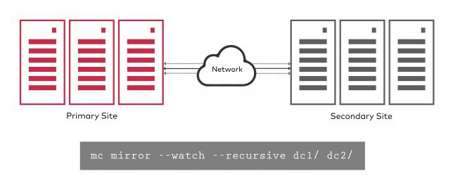

Min.io - Um servidor S3 para rodar na sua infraestrutura
Blog Cloud Native HomelabCompartilhe esse post nas redes sociais...
Olá Homelabers,
Hoje vou falar sobre o MinIO, uma ferramenta que me chamou a atenção há alguns meses e que agora estou estudando mais a fundo para talvez implementar em um projeto na FIRMA.
O MinIO é um servidor de Object Storage 100% compatível com o “protocolo” S3 - da AWS - open source, multi-cloud (que você pode rodar on-prem - dentro da sua infraestrutura), facilmente escalável, de alta performance e distribuído.
Uma das grandes vantagens do MinIO na minha opinião, é que ele é totalmente compatível com a API S3 da AWS, ou seja, se hoje você tem uma aplicação que “fala” S3 e precisa ter um storage dentro de casa, você pode utilizar o MinIO sem alterações no seu código. Existem muitas outras vantagens, mas essa, é a que mais me chamou a atenção , principalmente para o cenário que estou trabalhando no momento.
O MinIO é open source (APache 2.0) e está disponível para todas as plataformas: Linux, Windows, MacOS e Docker. Empresas podem comprar uma subscription para ter direito ao suporte.
A instalação e configuração do MinIO é bastante simples e nos próximos posts vou mostrar alguns cenários de instalação.
A documentação é simples, mas bem completa. Estão disponíveis SDKs para as linguagens Javascript, Java, GO, Python e .Net
Outras features bem legais do MinIO são a Replicação Continuada (Continuous Replication) e o Gateway Multi-Cloud (Multi-Cloud Gateway).
A feature de** Multi-Cloud Gateway** permite que você tenha seus dados disponíveis em qualquer lugar, seja seu ambiente on-prem, seja em um storage tradicional e nas principais clouds publicas - Google, Azure, etc - utilizando a API S3 para manipulação de dados.

A feature de Replicação Continuada (Continuous Replication) permite que seu dados estejam sempre replicados em diferentes datacenters e clouds, suportando sua estratégia de DR e de uma maneira facilmente escalável.

O MinIO conta também com uma ferramenta de linha de comando para gerenciamento e manutenção do ambiente chamada MinIO Client e está disponível para Linux, MacOS e Windows. https://docs.MinIO/docs/minio-client-quickstart-guide.html
Links úteis:
https://min.io/product/ - Informações sobre o produto
https://docs.min.io/ - Documentação do produto
https://github.com/minio/minio/issues - Lista de Issues (Aqui que você pode pedir ajuda)
https://github.com/minio/awesome-minio - Uma lista de projetos da comunidade utilizando MinIO.
É isso ai pessoal, aguardem mais posts aqui sobre o MinIO. Tenho gasto algumas boas horas no lab, estudando e montando cenários de uso e vou trazer para vocês!
Deixe nos comentários se você já conhecia o MinIO, se já usa hoje no seu ambiente - estou curioso para saber - ou ainda como você pensa que o MinIO pode ser útil para você.
Compartilhe esse post nas redes sociais...Valdecir Carvalho
Nerd e pai orgulhoso da Mariana e João. Profissional Sênior de TI com foco em arquitetura de infraestrutura e cloud computing. Blogueiro, podcaster, palestrante, amante de comunidades técnicas, fotógrafo aposentado e adora jogos antigos.
#vExpert · #VMUGLeader · #VUGBrasil · #vBronwBagBrasil · #VeeamVanguard